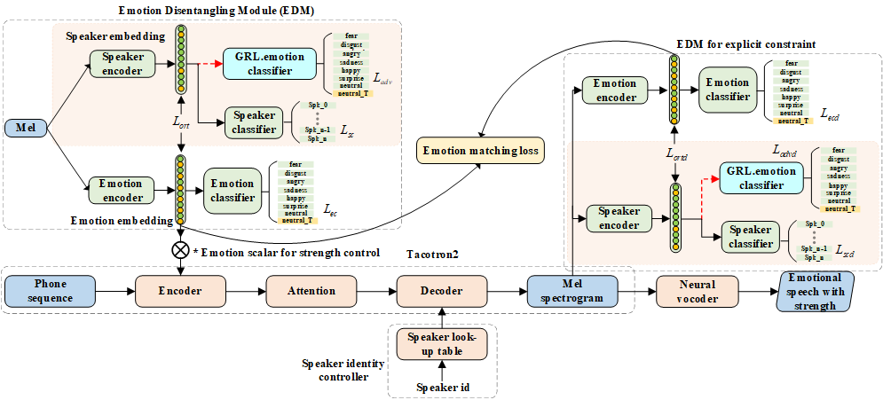

Controllable cross-speaker emotion transfer for end-to-end speech synthesis
Abstract:
The cross-speaker emotion transfer task in text-to-speech (TTS) synthesis particularly aims to synthesize speech for a target speaker with the emotion transferred from reference speech recorded by another (source) speaker. During the emotion transfer process, the identity information of the source speaker could also affect the synthesized results, resulting in the issue of speaker leakage, i.e., synthetic speech may have the voice identity of the source speaker rather than the target speaker. In this paper, a new method was proposed with the aim to synthesize controllable emotional expressive speech and meanwhile maintain the target speaker's identity in the cross-speaker emotion TTS task. The proposed method is a Tacotron2-based framework with the emotion embedding as the conditioning variable to provide emotion information. Two emotion disentangling modules are contained in our method to 1) get speaker-independent and emotion-discriminative embedding, and 2) explicitly constrain the emotion and speaker identity of synthetic speech to be that as expected. Moreover, the first effort that to control the transferred emotion strength for cross-speaker emotion transfer has been conducted in this work. Specifically, the learned emotion embedding is adjusted with a flexible scalar value, which allows controlling the emotion strength conveyed by the embedding. Extensive experiments have been conducted on a Mandarin disjoint corpus, and the results demonstrate that the proposed method is able to synthesize reasonable emotional speech for the target speaker. Compared to the state-of-the-art reference embedding learned methods, our method gets the best performance on the cross-speaker emotion transfer task, indicating that our method achieves the new state-of-the-art performance on learning the speaker-independent emotion embedding. Furthermore, the strength ranking test and pitch trajectories plots demonstrate that the proposed method can effectively control the emotion strength, leading to prosody-diverse synthetic speech.
1. The architecture of the proposed model:

2. Demo of style transfer for cross-speaker emotional TTS :
To facilitate fair comparison, we use the same text to synthesize speech in six emotions. This may let the listeners more focused on the emotion delivered in the acoustic aspects. The text is (in Chinese): 让那些小主顾们等一等到吧。
emotion
Emotion reference audio
Target speaker reference audio
w/o 2ort
w/o ort
Proposed
Mspk-gst
Mspk-vae
surprise
happy
sad
angry
disgust
fear
3. Demo of emotion strength control in cross-speaker emotional TTS :
To facilitate fair comparison, we use the same text to synthesize speech in six emotions and three strengths. This may let the listeners more focused on the emotion delivered in the acoustic aspects. The text is (in Chinese): 让那些小主顾们等一等到吧。